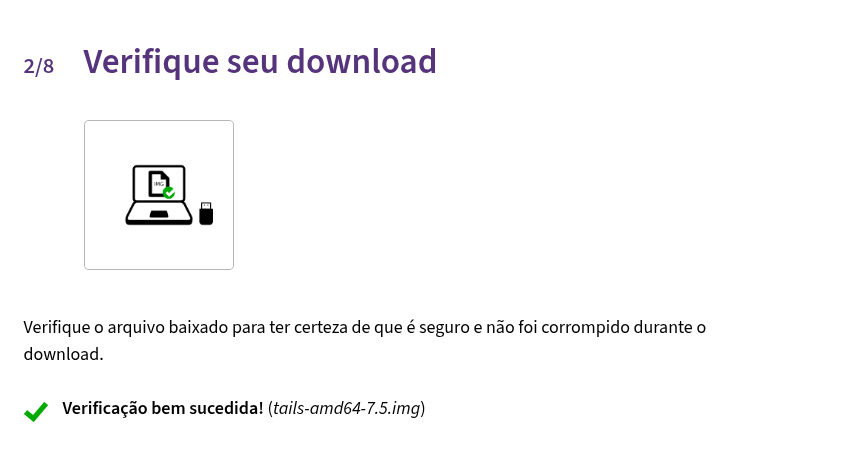
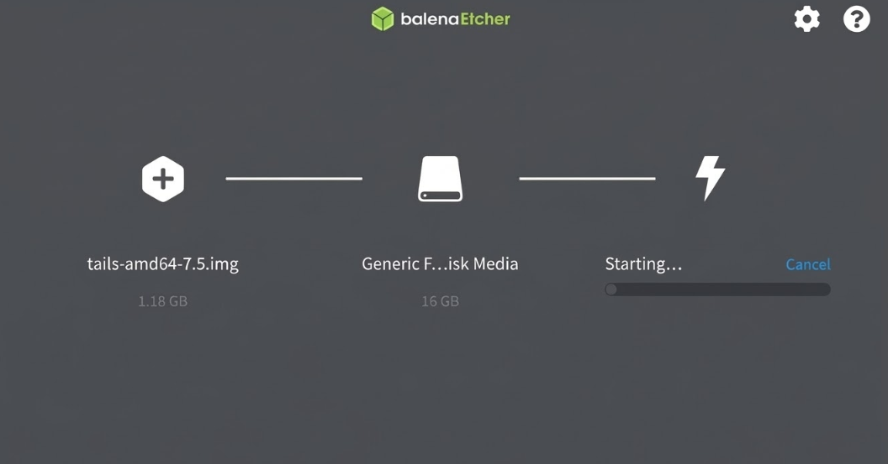
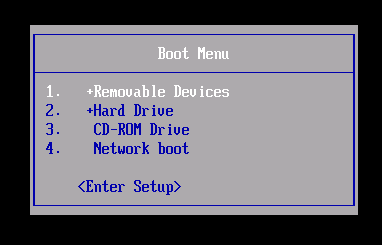
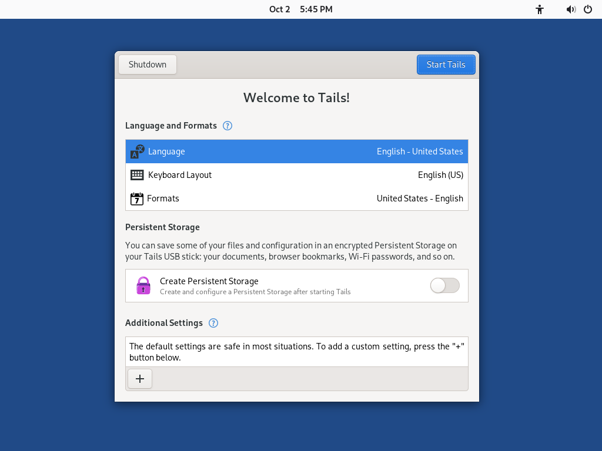

Bem-vindo(a) ao Projeto
Resumo do projeto
Navegar na internet hoje significa deixar um rastro constante de informações e metadados. Sistemas operacionais convencionais, como o Windows e o macOS, são projetados para armazenar históricos e estados de sessão, o que acaba criando "mapas" que facilitam a ação de malwares e o roubo de dados. Para combater essa exposição, este manual ensina de forma prática como instalar o Tails OS. Executado inteiramente a partir de um pendrive (direto na memória RAM), o Tails é um sistema amnésico: ele não deixa rastros no disco rígido do computador e destrói qualquer código malicioso assim que a máquina é desligada.
Créditos
Todo o conteúdo técnico aqui apresentado encontra-se em domínio público e pode ser utilizado livremente. Ressalta-se, contudo, que todas as inspirações para o desenvolvimento desse website (paleta de cores e estilo visual) foram baseados no trabalho do Portograph Studio (que também foram os criadores das artes da cartilha). Estas obras estão protegidas sob a licença Creative Commons (CC) para uso estritamente não comercial, sendo todos os direitos reservados aos respectivos criadores.
Um agradecimento especial também ao time de desenvolvimento do TailsOS e ao time de desenvolvimento do The Tor Project, que desenvolveram esses projetos incríveis e que continuam melhorando-o dia após dia, vocês são uma inspiração para mim e para muitos desenvolvedores. Algumas imagens da documentação foram ultilizadas para fins não comerciais e pedagógicos ao criar esse manual, todas estão devidamente destacadas com legendas de não pertencimento ao autor.
| Autor | Paulo Murilo Matielo de Oliveira |
| Título do Projeto | Criação de Um Ambiente Seguro para Operações em Sistemas Digitais com Tails OS |
| Instituição | Instituto Federal de Educação, Ciência e Tecnologia de São Paulo (IFSP) |
| Área de Concentração | Cibersegurança e Privacidade Digital |
| Orientador | Prof. Dr. Diego Cesar Valente e Silva |
| Ano | 2026 |
Cartilha de Conscientização
Embora ferramentas de isolamento sejam poderosas, elas não imunizam o operador contra o elo mais frágil: a Engenharia Social. Nossa cartilha foi desenvolvida focada na realidade brasileira.
O material traduz conceitos técnicos para uma linguagem acessível, ensinando pessoas comuns a identificar:
- Falsos portais de concursos e vagas de emprego.
- Golpes direcionados a servidores públicos e PJs (cobranças falsas de DAS/MEI).
- Táticas de intimidação de vitimas por mensagens.
Faça o download do material visual
Distribua em campanhas de prevenção ou utilize como material de apoio.
Baixar Cartilha (PDF)O Trabalho de Conclusão
Título: Criação de Um Ambiente Seguro para Operações em Sistemas Digitais com Tails OS.
Resumo da Pesquisa
O aumento da exposição de dados pessoais em ambientes conectados tem tornado a segurança digital um requisito essencial. Nesse contexto, o sistema Tails OS se destaca por adotar uma arquitetura voltada à privacidade e à não persistência de informações (amnésia).
O trabalho busca validar, através de testes rigorosos, como práticas de mitigação reduzem a superfície de ataque frente à industrialização do cibercrime e vazamentos em massa de informações ocorridos em plataformas corporativas e governamentais.
Acesse o Documento Completo
Contém toda a fundamentação teórica, modelagem de ameaças e a execução dos testes comparativos de tráfego de rede.
Baixar Relatório Técnico (PDF)1. Preparação e Custódia
A integridade da imagem do sistema é a fundação da sua segurança. Um sistema comprometido na origem anula todas as defesas posteriores.
Obtendo a Imagem
- Acesse o site oficial preferencialmente via Tor Browser.
- Baixe a Imagem USB (.ISO) correspondente à arquitetura do seu hardware.
Verificação Criptográfica
Nunca grave um sistema amnésico sem antes atestar sua integridade.
- Acesse a página de verificação oficial: Verificar Tails.
- Clique no botão "Verificar o Tails" e selecione a imagem
.ISObaixada.

2. Gravação no Pendrive
O Tails não se instala no disco rígido; ele roda em modo Live direto da memória RAM. Precisamos gravá-lo num pendrive USB 3.0 de no mínimo 8GB.
- Baixe e instale a ferramenta balenaEtcher.
- Selecione Flash from file e escolha a imagem validada.
- Escolha a unidade do seu pendrive em Select target. (Tudo no pendrive será apagado).
- Clique em Flash!.

3. Inicialização (Boot)
Force seu computador a carregar o pendrive antes do sistema operacional padrão.
- Conecte o pendrive e reinicie a máquina.
- Pressione repetidamente a tecla da BIOS/UEFI (Geralmente F2, F12, F8 ou DEL).
- Selecione a unidade USB no menu de inicialização (Boot Menu).

4. Welcome Screen
Diferente do Windows, o Tails não salva suas preferências automaticamente. Toda vez que o sistema iniciar, você verá a Welcome Screen (Tela de Boas-Vindas) antes de acessar a área de trabalho. É aqui que você define as "regras do jogo" para a sessão atual.

Configurações de Idioma e Teclado
Na parte superior esquerda da tela, você deve ajustar suas preferências regionais para não ter problemas ao digitar:
- Language (Idioma): Altere para "Portuguese (Brazil)". O sistema recarregará a tela para português.
- Keyboard Layout (Teclado): Certifique-se de que está configurado para o padrão do seu computador (ex: ABNT2).
- Formats (Formatos): Define como data e hora serão exibidas.
Configurações Adicionais (O Botão "+")
No canto inferior esquerdo, existe um botão de "+" (Additional Settings). Ele é crucial para a segurança avançada da sessão. Ao clicar nele, você pode configurar:
- Administration Password (Senha de Administrador): O Tails bloqueia a instalação de novos programas por padrão. Se você precisar instalar um pacote específico ou abrir o terminal em modo Root, ative essa opção e crie uma senha temporária. (Ao desligar o PC, ela será esquecida).
Após revisar essas opções, clique no grande botão azul "Start Tails" (Iniciar o Tails) no canto superior direito.
5. Conexão Tor & Bridges
Após clicar em "Iniciar o Tails" na tela anterior, a área de trabalho carregará. O Tails não permite nenhuma comunicação com a internet que não passe pela rede Tor. Portanto, o próximo assistente a aparecer será o Tor Connection (Conexão Tor).
O Processo de Conexão
- Conecte-se à rede Wi-Fi local clicando no ícone de rede no canto superior direito (ou insira o cabo de rede).
- A janela "Connect to Tor" oferecerá duas opções principais:
Opção 1: Connect to Tor automatically (Automático)
Use esta opção na sua casa ou em redes públicas comuns (cafés, shoppings). O sistema fará todo o roteamento pesado por conta própria. Se der certo, a janela confirmará "Connected to Tor successfully".
Opção 2: Hide to my local network that I'm connecting to Tor (Bridges)
Use esta opção se você estiver em um país com forte censura ou em uma rede corporativa/universitária que bloqueie o acesso ao Tor. Ao marcar isso, o Tails pedirá que você configure uma Bridge (Ponte).
6. Usando o Tails
Parabéns! O ícone de cebola na barra superior confirmou a conexão. Seu Tails OS está pronto e blindado!
Mas lembre-se: o ambiente está seguro, mas o fator humano é o elo mais fraco. Cumpra as regras de Ciber-Higiene:
- Não misture identidades: Nunca acesse seu e-mail pessoal, redes sociais abertas ou banco de dentro do Tails. Isso vincula o seu IP protegido à sua identidade civil instantaneamente.
- Cuidado com extensões: O Tor Browser já vem configurado de fábrica para máxima segurança. Não instale extensões extras, pois elas modificam o "fingerprint" do seu navegador e podem comprometer sua sessão.
Embora este guia cubra os passos fundamentais, o Tails OS é um sistema complexo e em constante atualização. Se você encontrar qualquer comportamento inesperado ou tiver dúvidas técnicas específicas, consulte sempre a documentação oficial do Tails OS.